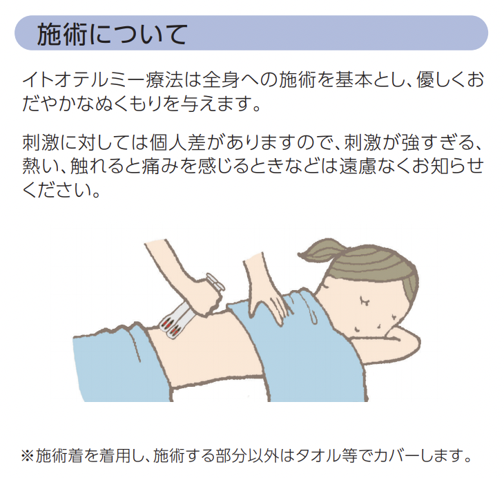
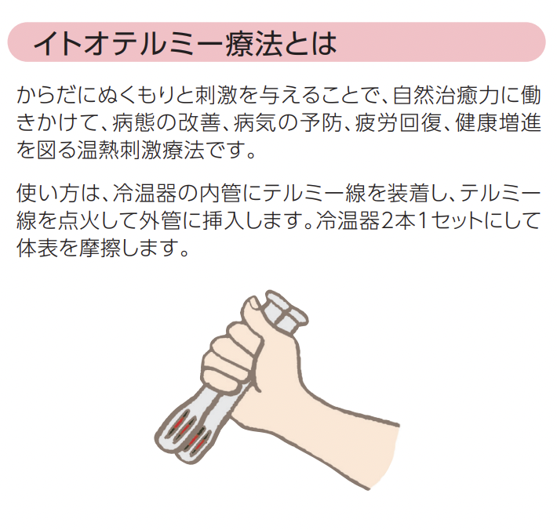

イトオテルミー療術所
福福福
テルミーってなに？ もっと詳しく知りたい方は こちら へ




一般財団法人
イトオテルミー親友会とは
全国約6万名の会員を持つ一般財団法人イトオテルミー親友会は、イトオテルミー療法を中心に個人の健康、家族の健康、社会の健康を考え、また健康をキーワードに社会に貢献することを目指しています。現代は人と共に喜び励まし合う、この当たり前と思われることが非常に難しくなっています。そのような社会において、親友会はイトオテルミーを通じて、万人が望む健康を共に考え、個々に健康観を築き、人との絆を大切に助け合い、豊かな生活を送ることを目的とした仲間の会です。